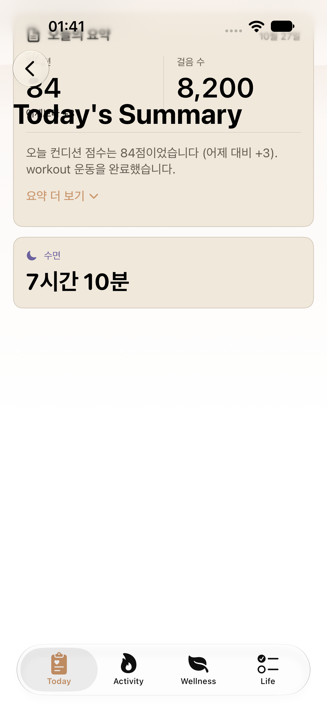
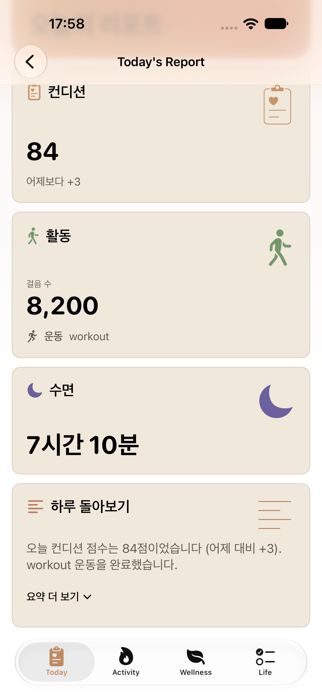
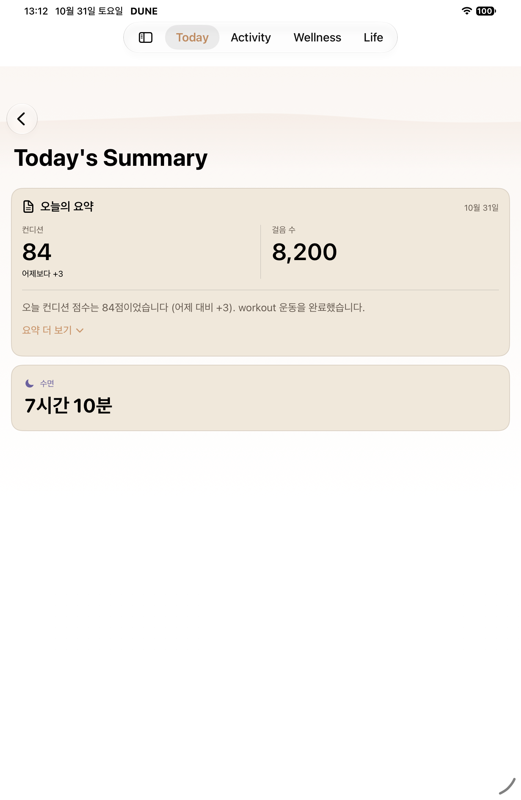
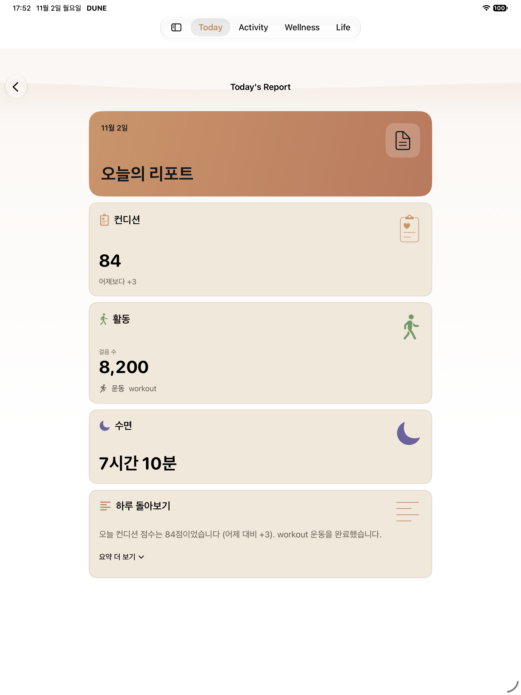
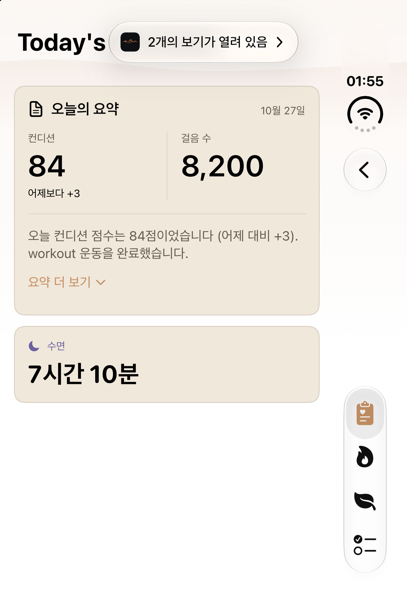
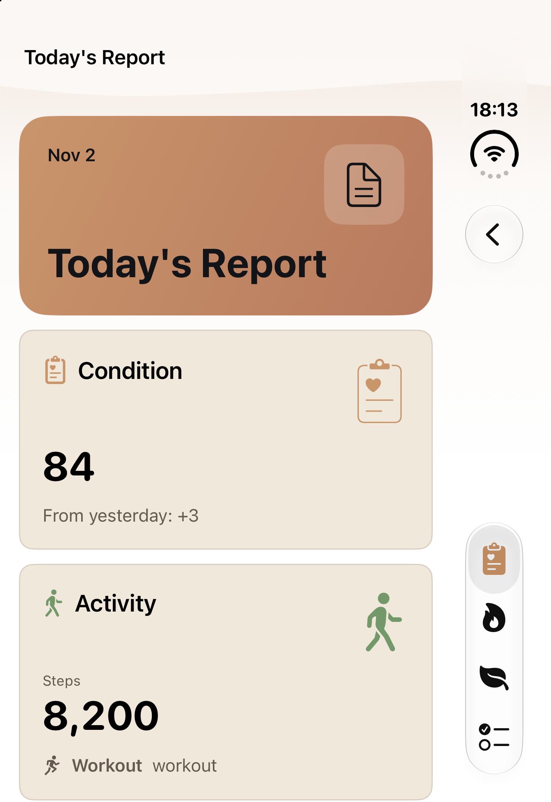
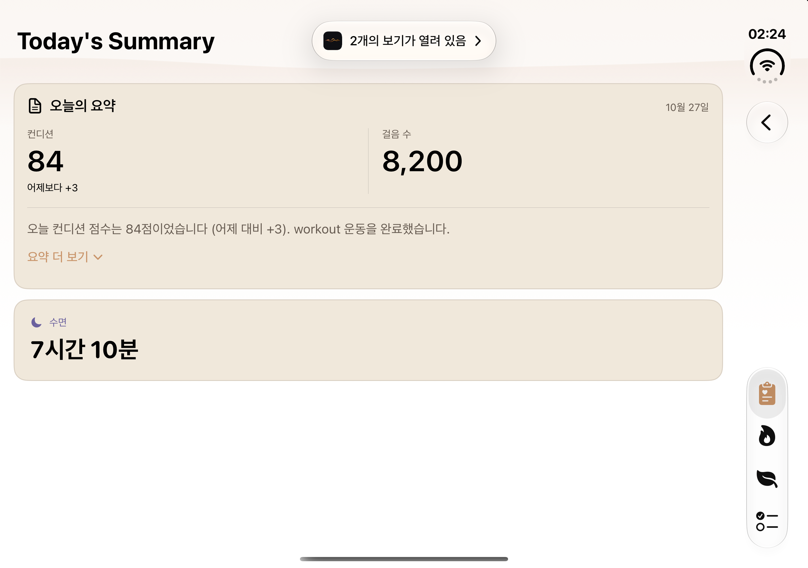
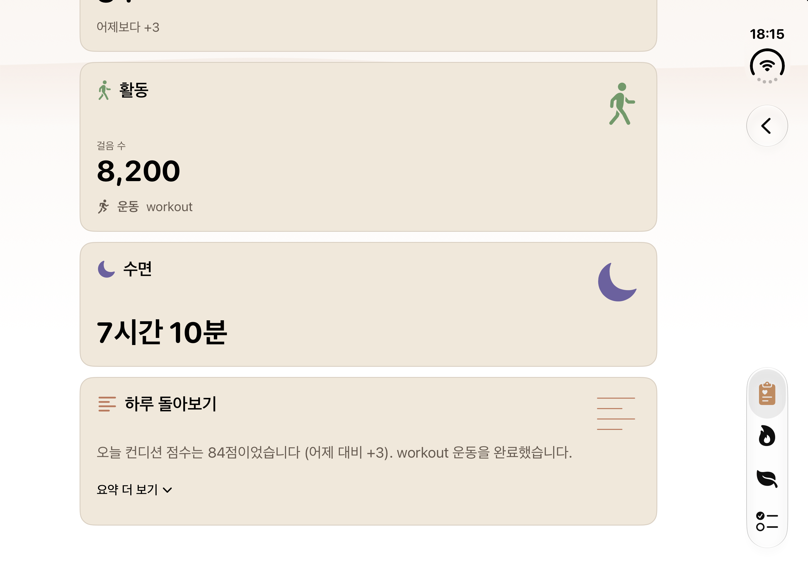

T10 · 오늘의 리포트
일반 iPhone·iPad·Duo 접힘·펼침의 실제 기존·개편 비교를 정식 디자인맵 T10 네 행에 반영했습니다. 아래에서 각 이미지의 촬영 소스·상태·기기 차이와 보충 캡처를 확인할 수 있습니다.
10월 27일 Phone·Duo는 T10 알림 진입의 요약 카드·별도 수면 화면입니다. Phone 제목 겹침과 Duo의 회전된 상태 표시를 원본 그대로 보존했습니다. iPad 기존은 10월 31일 mini, 개편은 다른 Pro 13 기기의 원본이며 다른 날짜의 숫자 일치를 주장하지 않습니다. 옛 Duo는 새 각도 검증 자료가 아닙니다.
일반 iPhone
일반 iPhone · 10월 27일 기존
4f09dff36c0ad6de878bb097c4e8d8f923d9888a · 2026-10-27T01:41:27.164000+09:00
1206×2622 · SHA256 0a1735d2edd4984c1eb617f8b8f91f6ed4b8bbcd21e9e0a833871a272d34806a
original gallery capture timestamp; method retained in original_capture
Original Phone navigation/header overlap or Duo sideways status/window artifact preserved; different historical device/date. No new-pose claim.일반 iPhone · 개편 · collapsed · 스크롤된 본문 (상단 표지 없음)
f9c956e1 · 2026-11-02T17:58:19.480000+09:00
1320×2868 · SHA256 63b0f54b3fcce20430dc8353a7ae72850146a4dc3da97e9ca1d6cb5b4d5fed0a
native-XCTest-attachment
Native source f9c956e1; public app patch fd888f13 is a separate source-closure observation. Not relabeled as public revision. Oct27 before is1206×2622 differentPhone; current1320×2868 collapsed attachment is scrolled without cover. DarkMAX title supplement shows actual cover; no extra execution requested.
iPad
iPad · 10월 31일 기존 · 접힘
1f7f9900 · 2026-10-31T13:12:35.826000+09:00
1512×2316 · SHA256 bcdbbc4adf5938e0853d0f51824706559cb00d3003079c8eb0d6fc2c01d0e940
native-XCTest-attachment
Historical Oct31 iPad mini differs from current Pro13; date/viewport differ. Original source dirty unknown, not inferred clean.iPad · 개편 · collapsed
f9c956e1 · 2026-11-02T17:52:23.358000+09:00
2064×2752 · SHA256 44feecf6d5ef8269ae6f4da79d301192ff983ba947ed2ed9000023a890547145
native-XCTest-attachment
Native source f9c956e1; public app patch fd888f13 is a separate source-closure observation. Not relabeled as public revision. Different iPad model/UDID/viewport and date; not a same-device before/after.
Duo 접힘
Duo 접힘 · 10월 27일 기존
4f09dff36c0ad6de878bb097c4e8d8f923d9888a · 2026-10-27T01:55:28.954359+09:00
1398×2034 · SHA256 1bfc35c681d1c3234c3017e684fc43d8d7cec5bad0c98acc5d83ef774d0b1626
original gallery capture timestamp; method retained in original_capture
Original Phone navigation/header overlap or Duo sideways status/window artifact preserved; different historical device/date. No new-pose claim.Duo 접힘 · 개편 · report entry cover + native rail back
ae2598a6 · 2026-11-02T18:13:03.878921+09:00
1398×2034 · SHA256 8454c72436c8e3604e0344226c3826e6d09d6008621183080e6dd6457133bb9c
host-file-mtime of paired native PNG; not attachment timestamp or checkpoint deadline
Original active display PNG; retained native revision ae2598a6. Scrolled body is not initial top; source closure is relevant app/test only, not whole-tree equality. 접힘: native ae2598a6 · 0° LCD · ACK 2회 · 실제 뒤로 탭/Today 복귀 1건 통과. 첫 쿼리 실패와 조건부 재시도 이력을 보존했습니다.
Duo 펼침
Duo 펼침 · 10월 27일 기존
4f09dff36c0ad6de878bb097c4e8d8f923d9888a · 2026-10-27T02:24:42.676728+09:00
2853×2007 · SHA256 0e67aecc5b57e031a4e77ecd36a197fdd9058a6748b2eb66931f8c378325c963
original gallery capture timestamp; method retained in original_capture
Original Phone navigation/header overlap or Duo sideways status/window artifact preserved; different historical device/date. No new-pose claim.Duo 펼침 · 개편 · normal collapsed · scrolled body without cover
ae2598a6 · 2026-11-02T18:15:39.430086+09:00
2853×2007 · SHA256 51081819aee86a9c3cca6f71c61076e97470a6cb98fcddce0f713b3c3f38660d
host-file-mtime of paired native PNG; not attachment timestamp or checkpoint deadline
Original active display PNG; retained native revision ae2598a6. Scrolled body is not initial top; source closure is relevant app/test only, not whole-tree equality. 펼침: native ae2598a6 · 180° LCD-1 · ACK 7회 · 보고서 기본·최대 글씨 검사 1건 통과. 기본 비교는 표지 없는 스크롤된 본문이며 최대 글씨 표지는 별도 보충 자료입니다.
추가 실제 상태 · 기존 펼침과 개편 기본·최대 글씨
출처와 제한
Duo 접힘 결과 · Duo 펼침 결과 · 접힘 각도 원문 · 펼침 각도 원문
iPad 결과 · Phone 결과 · iPad 최종 검토 및 최초 P3 철회
Phone 기본 비교는 스크롤된 본문으로 표지가 보이지 않습니다. 어두운 최대 글씨 표지 캡처는 별도의 보충 자료입니다. 현재 native revision은 f9c956e1입니다. 정식 맵 T10에 반영한 실제 비교 자료입니다. Duo native 실행 소스는 ae2598a6이며 기존 Phone·iPad f9c956e1 자료는 원래 출처로 유지합니다.
이미지별 원본·시각·소스·해시정식 맵의 원본 네 장은 아래에 별도로 보존합니다. Phone·iPad는 dirty 1f49c921·10월 15일, Duo 두 자세는 이미지별 소스 미확인·10월 13일입니다. 전역 443a32ca 출처를 모든 이미지의 개별 revision으로 바꾸지 않습니다.
정식 맵의 역사적 원본